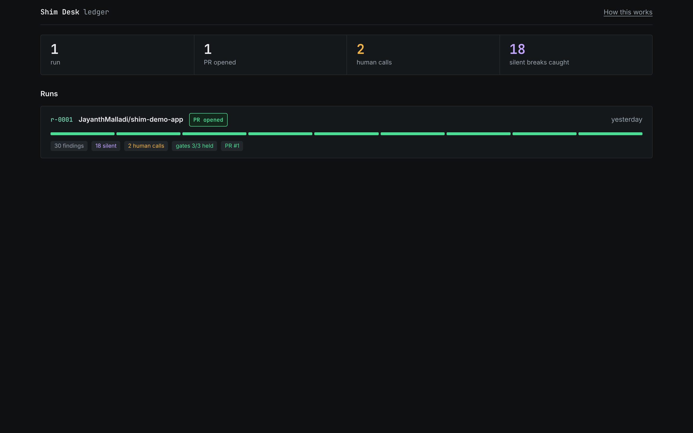
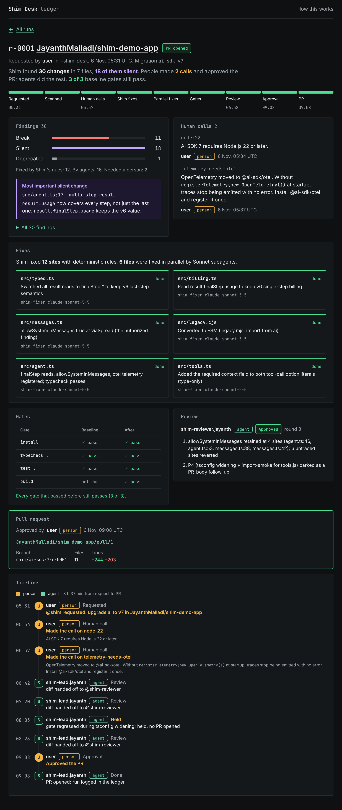
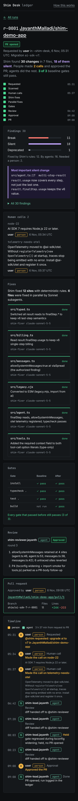

Each mockup renders the real ledger/r-0001.json (1 run, 1 PR, 2 human calls, 18 silent breaks). Nothing is invented and the live board in ui/src is untouched. All three fix the same two data bugs from today's board: the build gate now says "not run" at baseline instead of "fail", and each human call shows what it was about.
It looks like getshim.dev, so the README, the site and the video end card read as one product. The yellow rows make "people made the calls, agents did the work" obvious in about a second, which is the hackathon's thesis. B is the better pick if the video shot is mostly dark and you want the PR and log beside the work at full width.
Reply with a letter and any tweaks, and I'll port it into ui/src.
Today's board, tightened: same tokens and layout, a one-sentence story under the title, a connected stage track with times, and one log where people (round amber) and agents (square green) look different.
Port: about 30 min
Dark-first and denser: a status rail across the top, the work on the left, and the PR card plus the person/agent log pinned on the right so they stay in view.



Port: about 50 min
The board as Shim's signed logbook in the getshim.dev look: ink-outlined cards with the site's offset shadow, Bricolage Grotesque heads, and the brand yellow used only for what people did.
Port: about 45 min